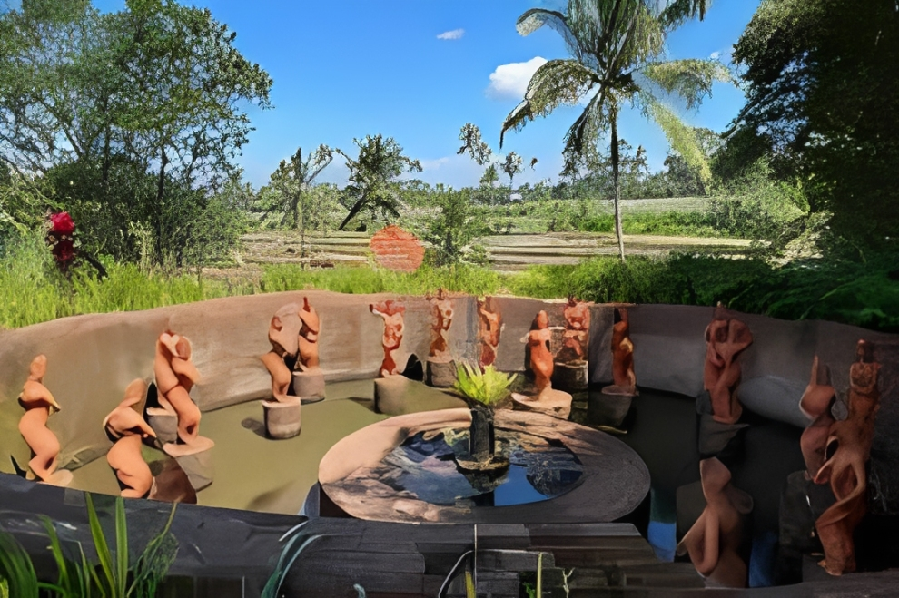

Desa Wisata Tamansari
destinasi dengan kekayaan alam dan budayanya, serta lokasinya yang dekat dengan Kawah Ijen.
Galeri Foto


Informasi Detail
Destinasi yang kaya akan potensi alam dan budaya, sering disebut sebagai "gerbang" menuju Kawah Ijen. Desa ini berhasil masuk dalam 50 besar Anugerah Desa Wisata Indonesia (ADWI) 2021.
Keunikan
- "Gerbang" Kawah Ijen dengan Fenomena Langka: Keunikan paling menonjol adalah perannya sebagai pos terakhir dan titik tolak teraman menuju Kawah Ijen.
- Situs Seni dan Budaya Unik: Desa ini memiliki situs seni budaya yang sangat khas, menampilkan sekitar 1.000 patung penari Gandrung (tarian khas Banyuwangi) yang tersusun rapi di tengah hamparan sawah dan perbukitan hijau, berfungsi sebagai amfiteater terbuka.
- Pemandian Alami dengan Cerita Rakyat: Pemandian alami dengan air pegunungan yang jernih, bersumber dari tujuh mata air, yang konon dipercaya sebagai tempat mandi para bidadari. Ini menawarkan pengalaman relaksasi yang unik dengan nuansa mistis lokal.
- Desa Sejuta Pohon Kopi: Dikenal sebagai salah satu penghasil kopi terbaik, wisatawan dapat mengikuti wisata edukasi seputar perkebunan dan proses pengolahan kopi.
- Smart Village dan Homestay Lokal: Desa ini mendapat predikat Smart Village karena pengelolaan digitalnya, dan menawarkan pengalaman menginap di homestay milik warga dengan kearifan lokal yang kuat, bukan hotel berbintang.
- Kuliner dan Kerajinan Khas: Menawarkan jajanan pasar dan kerajinan belerang yang menjadi ciri khas, seperti getuk lindri khas Tamansari.
Aktivitas yang Bisa Dilakukan
- Pendakian Kawah Ijen
- Mandi di Sendang Seruni
- Menjelajah Alam yang Masih Asri
- Belajar Budaya Lokal
- Edukasi Pertanian dan Perkebunan
- Mengamati Kehidupan Penambang Belerang
- Menyaksikan Kesenian Tradisional
Info Praktis
- Lokasi: Desa Wisata Tamansari terletak di Dusun Jambu, Tamansari, Kecamatan Licin, Kabupaten Banyuwangi
- Biaya Masuk: Biaya tiket masuk utama ke kawasan Desa Wisata Tamansari umumnya berkisar antara Rp 10.000 hingga Rp 20.000 per orang.
- Waktu Terbaik Berkunjung: Waktu terbaik untuk berkunjung adalah selama musim kemarau, yaitu sekitar bulan April hingga Oktober. Cuaca cenderung lebih cerah, memudahkan aktivitas luar ruangan seperti pendakian Kawah Ijen dan trekking di sekitar desa.
- Transportasi: Cara termudah adalah menggunakan kendaraan pribadi (mobil atau motor) atau menyewa taksi/mobil rental. Perjalanan memakan waktu sekitar 30-45 menit.
- Akomodasi: Akomodasi utama di Desa Wisata Tamansari adalah homestay yang dikelola langsung oleh masyarakat setempat, menawarkan pengalaman menginap otentik dan kearifan lokal.
Peraturan Kunjungan
- Menjaga Sopan Santun
- Berpakaian rapi dan Sopan
- Meminta Izin Sebelum Mengambil Gambar atau Foto
- Mengikuti Aturan Keselamatan
- Tidak Merusak Fasilitas